We are Alexia and Javi, and this flat is our home when we are not hosting. This guide has everything you need: how to get here from the airport, how to get into the building, and how things work in the flat.
15:00 to 23:00Check-in
Before 11:00Check-out
3rd floorWith lift
9008 TromsøElvegata 14, flat 305
Before you arrive
The building door is opened remotely by us, so a little coordination makes your arrival much easier. You should have received a message from us asking for your flight number and roughly what time you expect to reach the flat. On the day of your arrival, please also send us:
When you land: a quick message so we know you are on your way.
When you are at the main door: another message, so we can let you in even if the intercom call does not reach us.
Your door code arrives on check-in day
We send the code for the flat door and the Wi-Fi details in a private message on the day you arrive. You will not find them in this guide.
Getting here from the airport
Tromsø airport is only about ten minutes from the city centre, and you have three good options. Prices below are for one adult, one way, and can change.
Airport Express bus
125 NOK
The easiest option with luggage. It leaves from right outside the terminal and its times follow the flight arrivals. Buy your ticket online in advance or from the driver by card (no cash). It stops at several places in the centre, including Storgata, which is the closest stop to us. Tickets from the Svipper app are not valid on this bus.
The cheapest option. Download the Svipper app before you travel: you can plan your trip, follow the buses in real time and buy your ticket before you board. Plan a journey from Tromsø lufthavn to Elvegata 14. Buses 24, 26 and 42 all go from the airport to our stop, Skippergata, and take roughly the same time, about 25 minutes. From the stop it is less than five minutes on foot to our door.
A single ticket costs 50 NOK in rush hour and 30 NOK outside it (on weekdays from 09:00 to 14:00 and from 17:00 to 01:00); the app shows the right price for your start time. Tickets are valid for 1 hour 30 minutes from the moment you activate them, and you can take as many buses as you like within that time. If you plan to take the bus several times in a day, a 24-hour ticket costs 140 NOK.
Book at the taxi kiosks by the arrivals hall exit, or call one of the local companies. The driver should tell you a fixed price before you set off. The building is called Elvegata 14, but the main entrance is reached from Storgata, where the Joker supermarket and the Cous restaurant are. Please ask the driver to drop you there. The building also has a back entrance, and the intercom there will not work for you.
Tromsø Taxi
03011 · from abroad +47 776 03 000
Din Taxi
02045 · from abroad +47 401 02 045
Finding the main entrance
The building is called Elvegata 14, but you reach the main entrance from Storgata, where the Joker supermarket and the Cous restaurant are. It is a glass door under the overhang of the building, about three minutes on foot from the Skippergata bus stop.
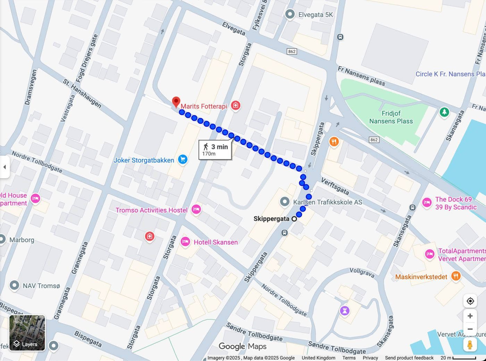
Walking route from the Skippergata bus stop. Map: Google Maps.
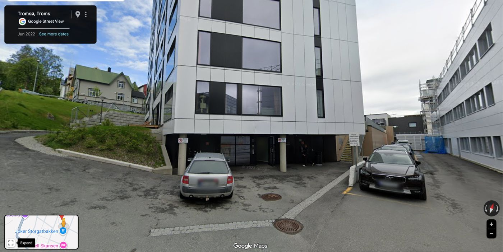
The main entrance is the glass door under the overhang. Image: Google Street View, June 2022.
The building has no parking for guests. The parking rules have recently changed: street parking in Storgata is now only allowed from 11:00 to 23:00, and it is paid until 20:00. You can pay for street parking with the EasyPark app. Paid indoor parking, open 24 hours, is nearby at Fjellet P-hus and Seminaret P-hus. More parking information is on Tromsø Parkering.
Getting in
Call us from the main door
At the main entrance, press 305 on the intercom and then the green call button. We will answer and open the door for you. If nothing happens within a minute, send us a message and ring again, so we can open the door for you.
How to call flat 305 from the intercom.
Prefer to let yourself in?
If you send us your email address before you arrive, we can send you a digital key for the building door. Install the free Ring app, accept our invitation, and you can open the main door from your phone during your stay. We only use your email for this and remove the access after you leave.
Take the lift to the 3rd floor
Flat H305 is at the end of the corridor.
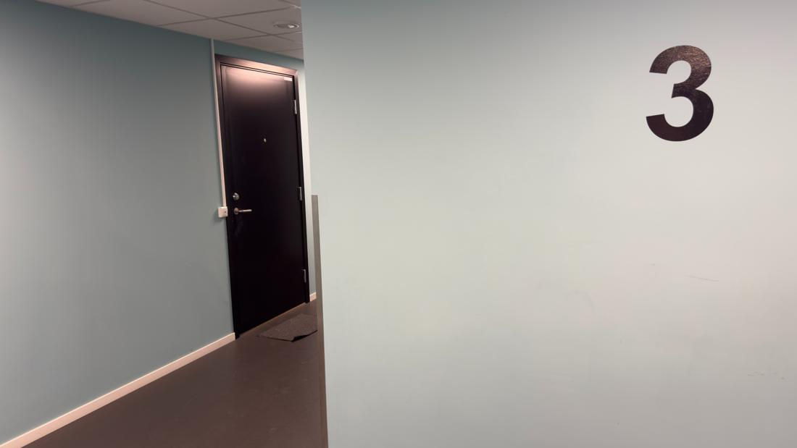
3rd floor, by the lift.
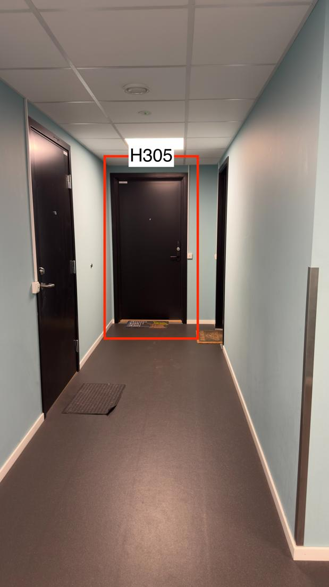
H305 is the door straight ahead.
Open the flat door with your code
Touch the keypad to light it up, then type the code we sent you, including the # at the end. Your code works for your whole stay. When you leave, type your code and close the door, and it will lock by itself in a few seconds.
Pick up your keys
Your keys are waiting for you on the kitchen counter. The set has the key for the main building door and a chip that opens the flat door, so from now on you can come and go as you like.
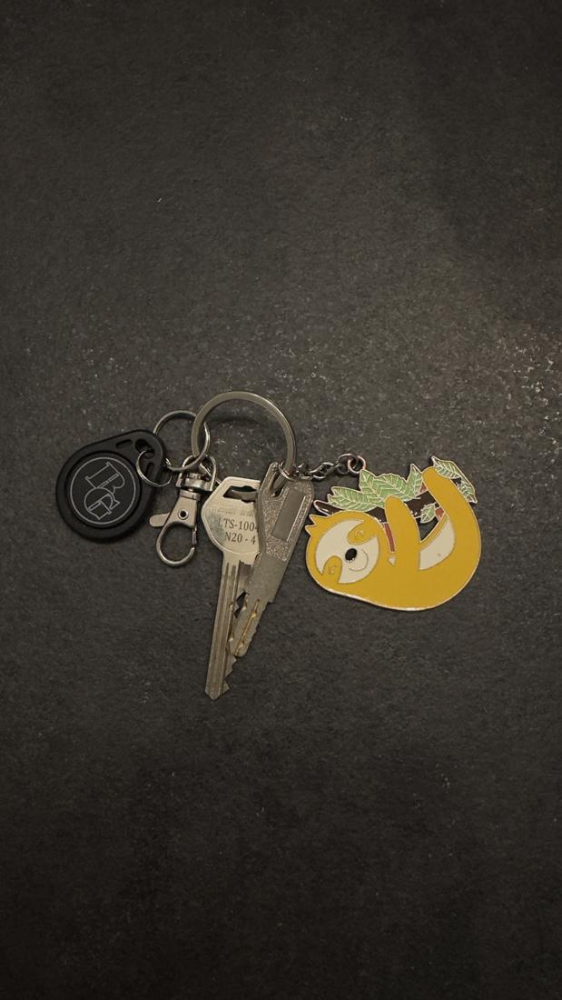
Building key and flat chip.
The building key is a special security key, so please look after it. If it is lost, the replacement costs 800 NOK.
If something goes wrong
Message us straight away. We also keep a backup key close to the building, available until 23:00, and we will tell you how to collect it if you need it.
The flat
Please make yourself at home. You will receive the Wi-Fi details in our welcome message on the day you arrive, and you can also find them in your booking in the Airbnb app.
Heating
Central heating is always on, to protect the building's pipes and ventilation from freezing. You can set it between 15 and 22 °C on the panel in the corridor by pressing the thermometer button on the right. The living room also has a wall heater you can adjust. The portable heater (our little fake fireplace) can be moved to whichever room you like, but please switch it off when you go out.
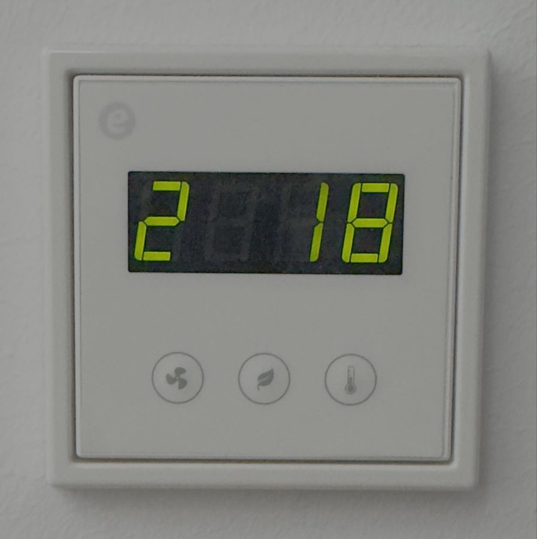
The heating panel in the corridor.
Kitchen
Water. Tromsø tap water is excellent. Let it run cold for a moment and drink away.
Hob. The hob can switch itself off for safety if it has not been used for a while. If the buttons stop responding, press the button on the small white device above the hob a few times and try again. When you cook, please turn on the extractor hood, as the building fire alarm is quite sensitive to smoke and steam.
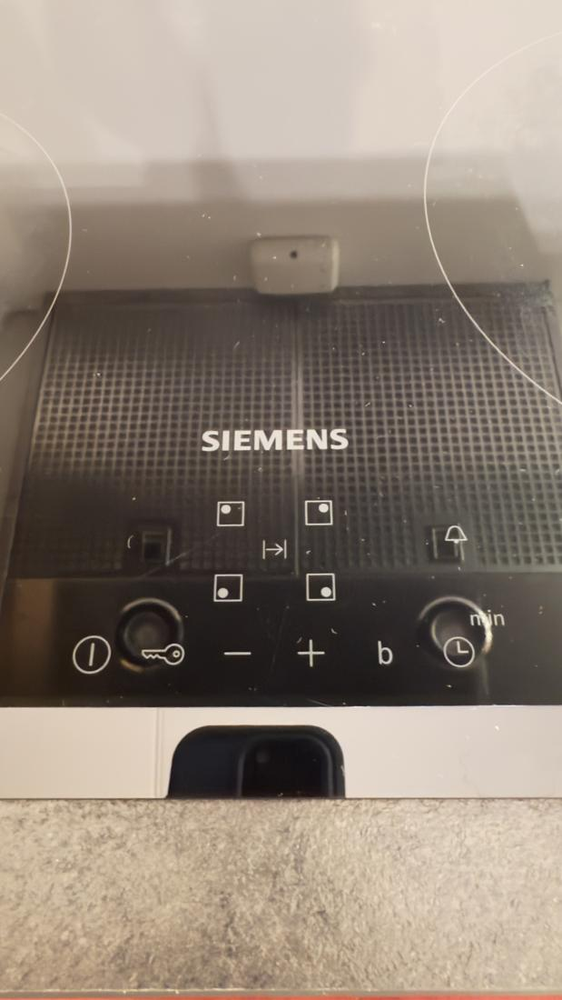
Hob controls and the white safety device.
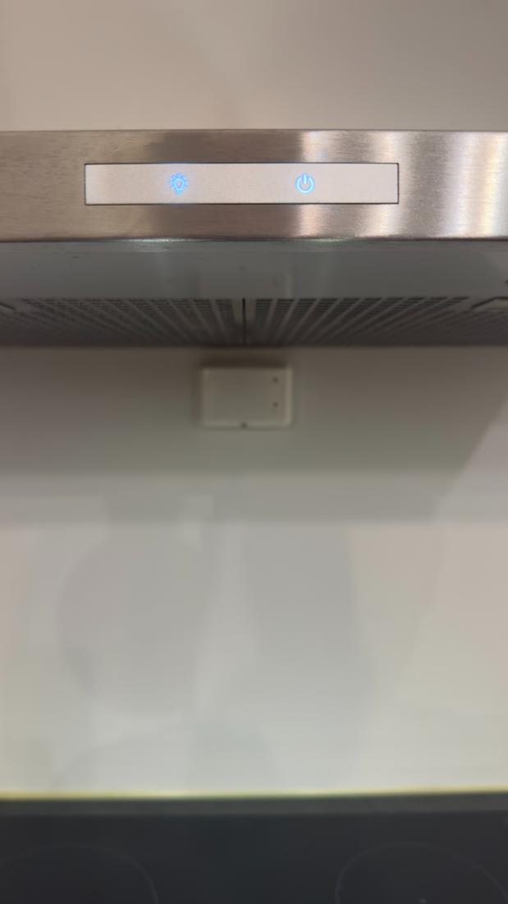
Extractor hood buttons. Please turn it on when you cook.
How to use the hob, and how to wake it up with the white device if the buttons stop responding.
Oven. Both knobs need to be set: one for the programme and one for the temperature. Push each knob to pop it out, then turn it. Please take out the spare trays before heating.
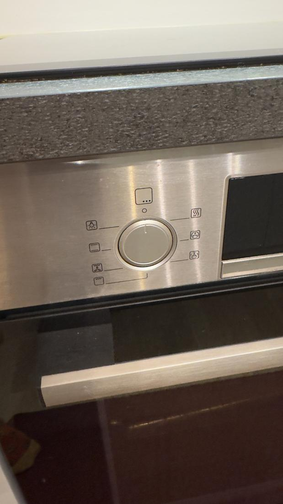
Programme knob.
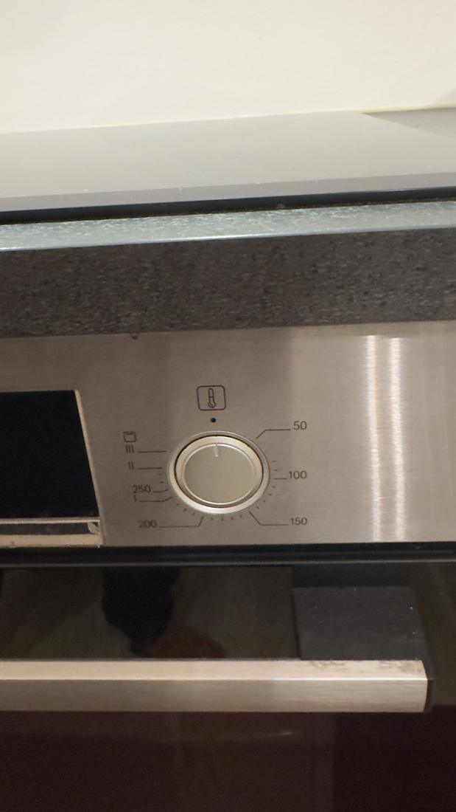
Temperature knob.
Coffee. Fill the Nespresso water tank at the sink, insert a capsule, close the lid and press the button on top for a single or double cup. Press again to stop early. Used capsules collect inside; empty them into the rubbish now and then.
Dishwasher. Tablets are in the jar on top of the microwave. Put one in the dispenser, press the left button to switch on, press the third button to choose a programme, and close the door. It opens by itself when finished.
Appliances. You are welcome to use the air fryer, rice cooker, kettle, toaster and sandwich maker. Please clean them after use and unplug them when you are done.
Fridge and freezer. Feel free to use the empty shelves and one of the freezer drawers. Some of our own things are stored there too, so we would be grateful if you could leave them as they are.
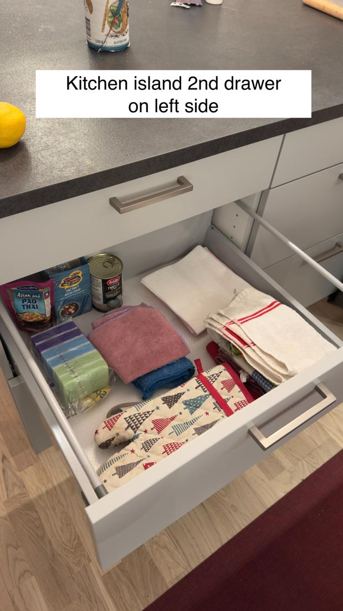
Kitchen cloths, tea towels and oven gloves: kitchen island, 2nd drawer on the left.
Sleeping
The bedroom has a double bed with two single duvets, as is the custom in Scandinavia, so nobody has to fight over the covers. The three top drawers of the dresser, the clothes rack, the bench and both bedside tables are free for you.
There are two sofa beds. In the living room, pull the mattress unit out from under the sofa and lift it to the same height as the seat. In the dining area, first move the table and pull the sofa away from the wall, then gently pull the backrest towards you until it releases and lies flat, and pull out the mattress unit in the same way.
Duvets, pillows and bed linen for the sofa beds are in the bedroom wardrobe. We leave fresh towels out for you, and if you need more, extra towels are in the bottom two drawers of the bedroom chest.
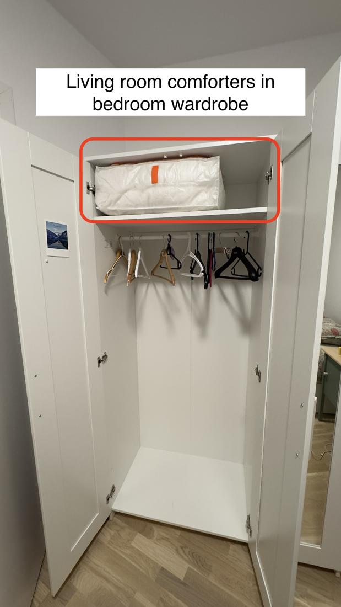
Sofa bed duvets: bedroom wardrobe, top shelf.
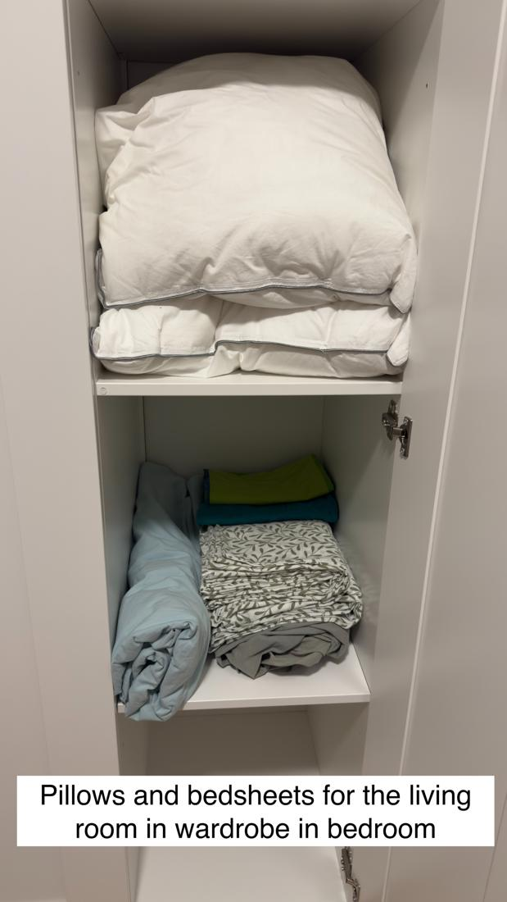
Pillows and bed linen.
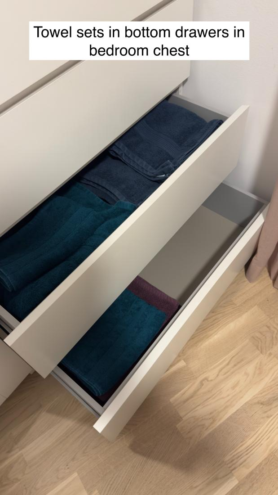
Extra towels: bottom two drawers of the bedroom chest.
Bathroom and laundry
The floor is heated, with a controller under the light switches. We suggest keeping it around 3, as it gets very warm. In the shower, the right knob sets the temperature and the front knob the pressure; to use the hand shower, switch the valve on the hose and press the button on the handle.
You are welcome to use the washer and dryer. Before using the dryer, clean the lint filter just inside the door and empty the water container at the top left. A folding drying rack stands next to the shower. Extra toilet paper is in the lower drawer under the sink.
TV
The TV is connected to the Wi-Fi, so you can log in to your own Netflix, HBO or Disney+ account, or cast from your phone.
Rubbish and recycling
The bins are under the kitchen sink. Use the black bags for general waste; you will find them in the top middle drawer of the kitchen island. If available, you can also use clear bags with purple dots for rinsed plastic packaging and clear bags with blue dots for paper and cardboard.
To empty them, take the lift or stairs to floor -1. Turn right through the door into the garage, walk through it, and the waste room is on your left. Glass, metal and large cardboard boxes go in the containers to the right of the garage car entrance, outside the waste room.
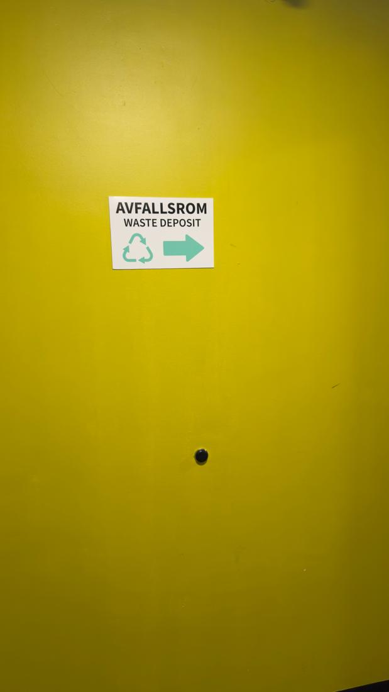
Floor -1: follow the waste deposit sign.
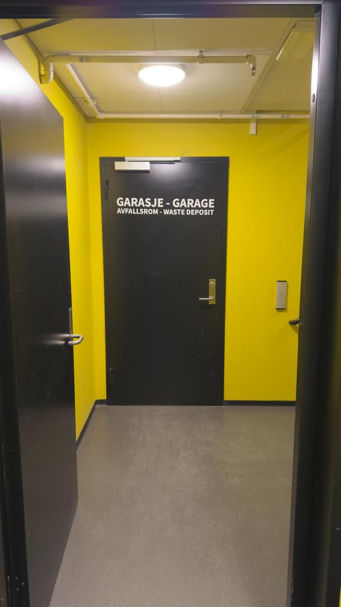
Through the garage door.
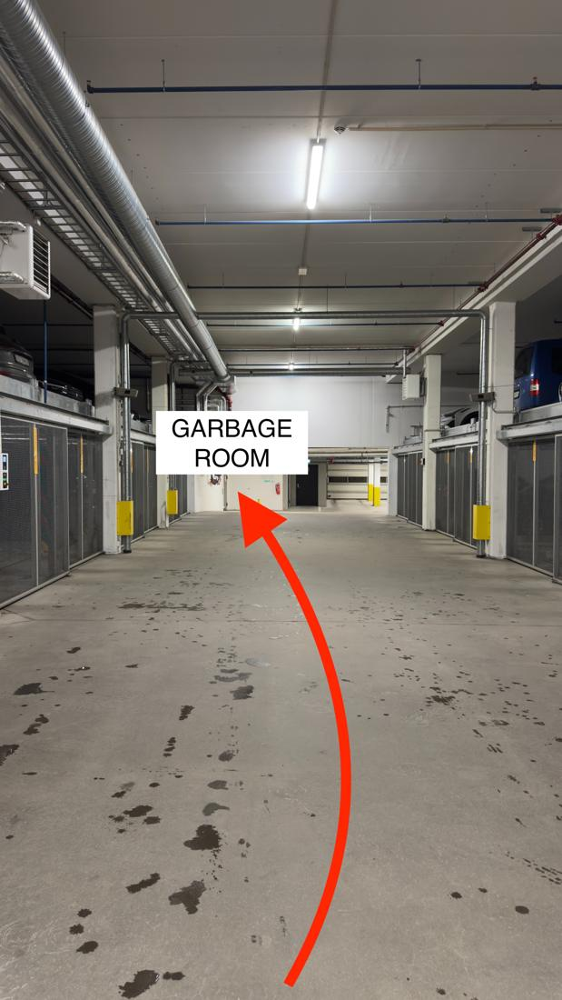
Walk through the garage.
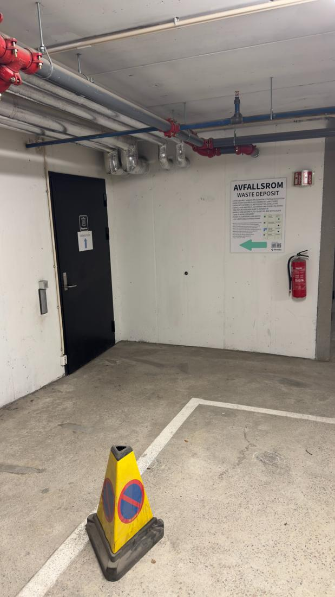
The waste room door.
Safety
110
Fire
112
Police
113
Ambulance
There is a fire extinguisher in the kitchen island (right-hand door) and another in the bedroom, behind the door. A fire blanket hangs between the fridge and the wall on the left. Please only touch them in a real emergency.
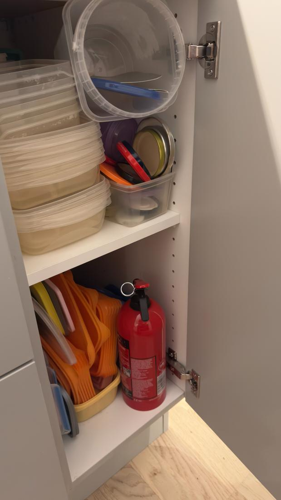
Kitchen island, right door.
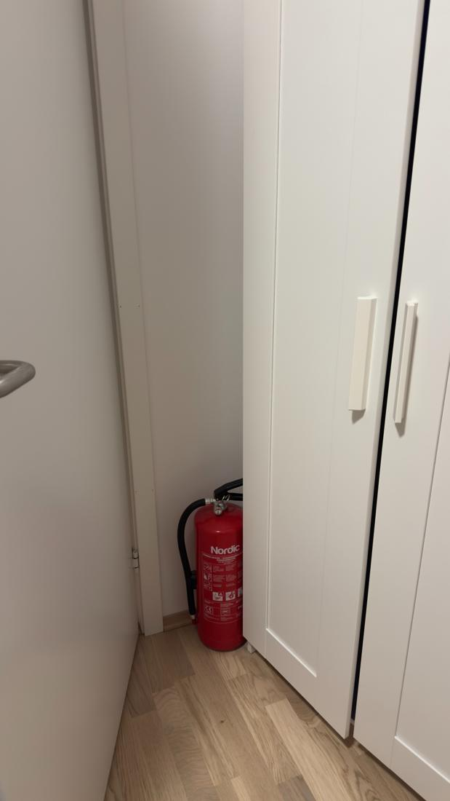
Bedroom, behind the door.
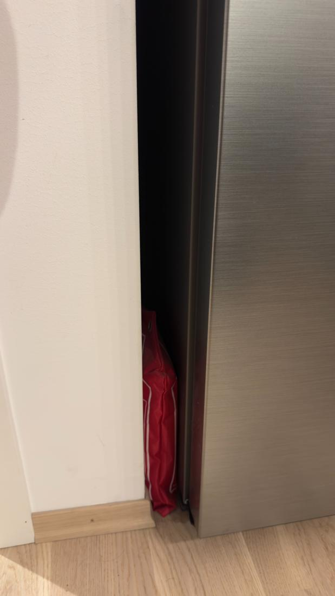
Fire blanket, between the fridge and the wall.
If the fire alarm sounds, leave calmly by the stairs (not the lift), go down to the ground floor and wait outside at the back of the building.
Alarm from cooking smoke?
Only if you are completely sure there is no fire: go to the panel in the corridor, by the door at the end of the hallway. Press and hold the red button for 2 seconds to stop the alarm, open the windows to clear the smoke, then press and hold the green button for 2 seconds to reset it. The reset must happen within 3 minutes. If the fire brigade is called out by cooking smoke, the guest is charged the fee, so please always use the extractor hood and never leave the hob or oven unattended.
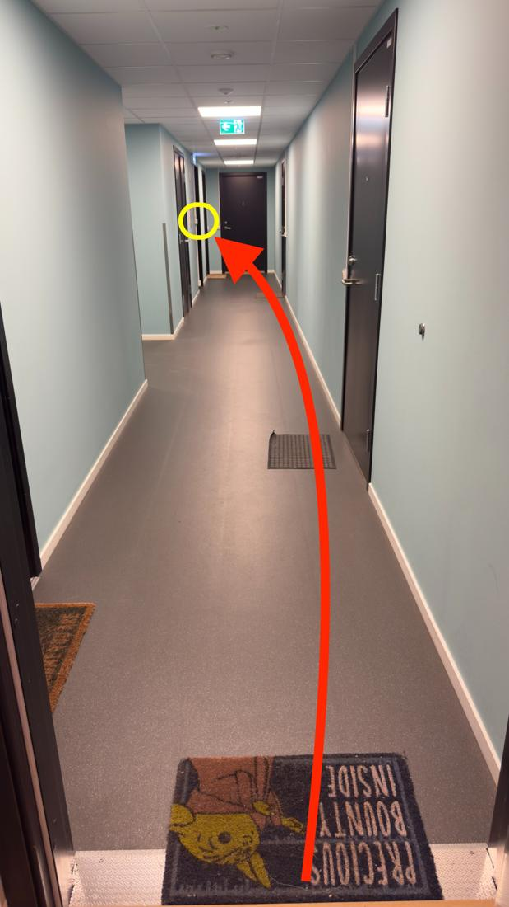
Where the panel is in the corridor.
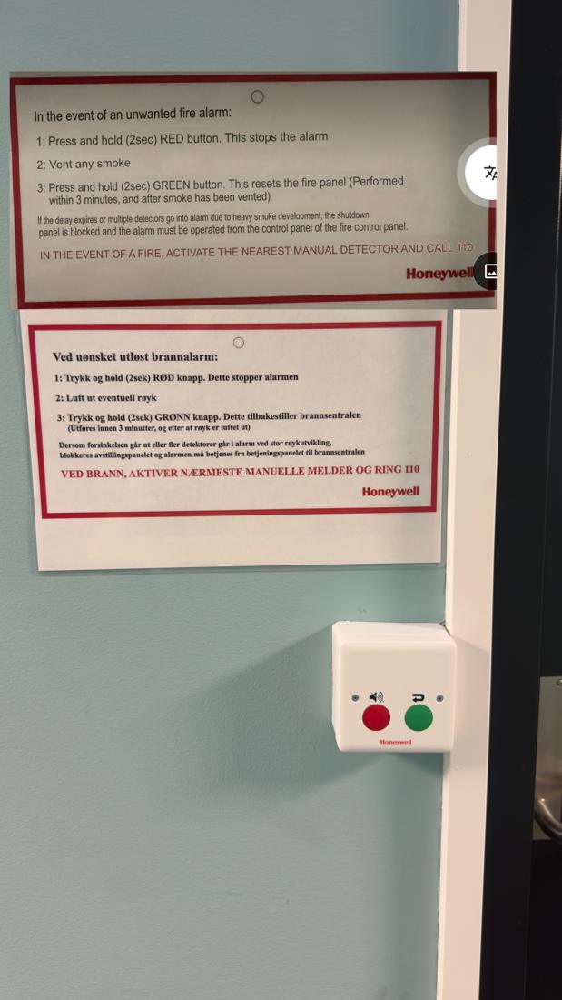
Red to stop, green to reset.
House rules
Northern Norway can be wet and muddy, so please leave shoes, jackets and outdoor gear at the entrance, where the warm floor helps dry them. Ski boots and spiked shoes never go inside, and if you use removable ice spikes on your shoes, please take them off before you come in.
No smoking or vaping indoors, and no candles or open flames.
No pets, parties or events.
Up to 4 guests. Visitors are welcome, but only the guests on your booking may stay overnight.
Quiet hours are from 23:00 to 07:00.
Tromsø weather changes fast. Keep windows closed when you are not using them, and always when you go out.
Switch off anything that heats up (hair tools, toaster, hob, portable heater) when you sleep or go out.
If something breaks or goes missing, please just tell us so we can replace it before the next guests. Accidents happen, and we will sort it out together.
Check-out
Check-out is before 11:00. Before you go:
If possible, load and run the dishwasher and take the rubbish down to floor -1.
Switch off the lights and the portable heater.
Unplug small appliances.
Close all the windows.
Leave the keys on the kitchen counter. To lock the door, type your code on the keypad and close the door; it will lock by itself in a few seconds.
Our Tromsø
We lived in Tromsø for many years, and these are the places we send our friends.
Getting around
Most of the city's main bus lines (20, 24, 26, 28 and 42) stop at Skippergata, so it is easy to reach the Jekta shopping centre, the university or the airport. From there you can take buses 20, 24, 26 or 28 to the Arctic Cathedral, bus 26 to the Fjellheisen cable car (or 20 and 28 plus a short walk), and bus 34 to the university and the Arctic-alpine botanical garden.
Tours
For guided tours or other activities you can visit: Northern Lights: Arctic Wild Tours, run by a friend of ours, and Wandering Owl, or Best Arctic, but there are many other tour operators in the city. Visit Tromsø also has a good overview of what is on.
We recommend booking in advance, especially for activities like dog sledding, as they can be fully booked in the high season.
Eating and drinking
Visit Tromsø has a good general overview of where to eat and drink. These are some picks from our own personal taste.